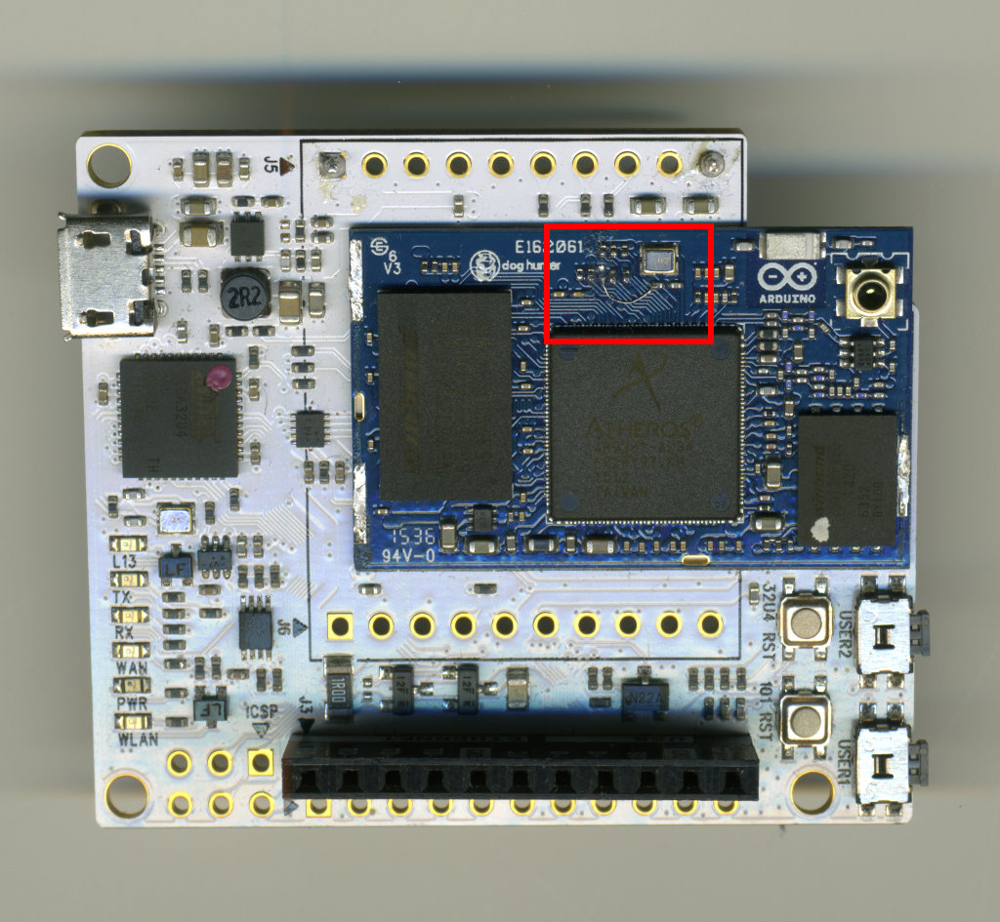

Goals of the project
This project aims to make a device useful to chat and transfer files between computers in a context where there aren't other easy ways to do so. Such a context could be a university lab, since you can't install software on the lab's computer, nor you want to do a login in a website.
Implementation
Since we can't install software or drivers on the computer, the device acts as a USB-to-Ethernet adapter and makes a web interface available to the computer. It does also host a WebSocket server to communicate in real-time with the client. Each device can talk with each other through a mesh network.
Table of Contents
Hardware
System on a Chip
There aren't many options to choose from for the hardware, since it must have the following features:
- USB peripheral configurable in slave mode
- Integrated Wi-Fi to establish a network with other devices
- Ethernet and serial ports, just to be able to flash a new firmware during development
- All the features above must actually work under Linux
- Small form factor
- Not too expensive
The only platform with all those features is the AR9331 SoC, and there are some boards on the market based on this chip. They usually ship with 16 MB of SPI flash memory (the maximum supported) and 64 MB of DDR2 RAM, some of them are:
- Carambola2 (http://www.8devices.com/products/carambola-2)
- Arduino Industrial 101 (http://www.arduino.org/products/boards/arduino-industrial-101)
It must be noted that to be able to configure the USB peripheral in device mode, the pin GPIO13 must be tied low at device boot, but some boards do not make it available in the headers and they need a bit of soldering.
Example: Industrial 101 

Bootloader and flash memory
The flash memory is divided in 64 KB blocks, for a total of 256 individually addressable blocks. It is accessible at addresses between 0x9f000000 and 0x9fffffff (inclusive), and it's usually divided into partitions as summarized by the following table:
| Start address | Size (hex) | Blocks | Description |
|---|---|---|---|
| 0x9F000000 | 0x040000 | 4 | Bootloader (U-Boot) |
| 0x9F040000 | 0x010000 | 1 | Bootloader enviroinment variables |
| 0x9F050000 | 0x150000 | 21 | Linux kernel in uImage format |
| 0x9F1A0000 | 0xE50000 | 229 | Linux root in squashfs format |
| 0x9FFF0000 | 0x010000 | 1 | ART partition |
The first two partitions and the ART partition must NEVER be erased / overwritten. The ART partition contains Wi-Fi calibration data specific for the single SoC.
When the board is powered up, the bootloader starts and it's output is available on the serial interface (8N1, 115200 baud).
If a specific string is sent over the serial line (usually \n, but lin on this board), you can access the bootloader's shell:
U-Boot 1.1.5-linino-g2996c856-dirty (Oct 2 2015 - 17:52:14)
Linino Board (ar9331) U-boot
DRAM: 64 MB
Top of RAM usable for U-Boot at: 84000000
Reserving 218k for U-Boot at: 83fc8000
Reserving 192k for malloc() at: 83f98000
Reserving 44 Bytes for Board Info at: 83f97fd4
Reserving 36 Bytes for Global Data at: 83f97fb0
Reserving 128k for boot params() at: 83f77fb0
Stack Pointer at: 83f77f98
Now running in RAM - U-Boot at: 83fc8000
Flash Manuf Id 0xef, DeviceId0 0x40, DeviceId1 0x18
flash size 16777216, sector count = 256
Flash: 16 MB
In: serial
Out: serial
Err: serial
Net: eth0: b4:21:8a:00:00:00
eth1: b4:21:8a:00:00:01
eth0, eth1
autoboot in 4 seconds (stop with 'lin')...
linino>This shell has to be used to download a new firmware on the board withouth a working OS (through the Ethernet connection). It's also useful to set the memory boot address of the kernel (wich must be the start of the kernel partition).
- To load a new firmware from a TFTP server at 192.168.1.2:
linino> setenv ipaddr '192.168.1.245' linino> setenv serverip '192.168.1.2' linino> tftp 0x80060000 openwrt-trunk-ar71xx-generic-carambola2-squashfs-sysupgrade.bin; linino> erase 0x9f050000 +0xf90000; linino> cp.b $fileaddr 0x9f050000 $filesize; - To set the boot address:
linino> setenv bootcmd 'bootm 0x9F050000;' linino> saveenv Saving Environment to Flash... Protect off 9F040000 ... 9F04FFFF Un-Protecting sectors 4..4 in bank 1 Un-Protected 1 sectors Erasing Flash...Erase Flash from 0x9f040000 to 0x9f04ffff in Bank # 1 First 0x4 last 0x4 sector size 0x10000 4 Erased 1 sectors Writing to Flash... write addr: 9f040000 done Protecting sectors 4..4 in bank 1 Protected 1 sectors linino>
The manual for each shell command is available here: http://www.denx.de/wiki/view/DULG/Manual
List of all available commands on the Arduino 101:
linino> help
? - alias for 'help'
autoscr - run script from memory
base - print or set address offset
bdinfo - print Board Info structure
boot - boot default, i.e., run 'bootcmd'
bootd - boot default, i.e., run 'bootcmd'
bootelf - Boot from an ELF image in memory
bootm - boot application image from memory
bootp - boot image via network using BootP/TFTP protocol
bootvx - Boot vxWorks from an ELF image
cmp - memory compare
coninfo - print console devices and information
cp - memory copy
crc32 - checksum calculation
dhcp - invoke DHCP client to obtain IP/boot params
echo - echo args to console
erase - erase FLASH memory
ethreg - S26 PHY Reg rd/wr utility
exit - exit script
flinfo - print FLASH memory information
go - start application at address 'addr'
help - print online help
iminfo - print header information for application image
imls - list all images found in flash
itest - return true/false on integer compare
loadb - load binary file over serial line (kermit mode)
loads - load S-Record file over serial line
loady - load binary file over serial line (ymodem mode)
loop - infinite loop on address range
md - memory display
mii - MII utility commands
mm - memory modify (auto-incrementing)
mtest - simple RAM test
mw - memory write (fill)
nfs - boot image via network using NFS protocol
nm - memory modify (constant address)
ping - send ICMP ECHO_REQUEST to network host
printenv- print environment variables
progmac - Set ethernet MAC addresses
protect - enable or disable FLASH write protection
rarpboot- boot image via network using RARP/TFTP protocol
reset - Perform RESET of the CPU
run - run commands in an environment variable
saveenv - save environment variables to persistent storage
setenv - set environment variables
sleep - delay execution for some time
test - minimal test like /bin/sh
tftpboot- boot image via network using TFTP protocol
version - print monitor version
linino>Operating system
The device runs a patched version of OpenWRT with support for USB gadget mode on the AR9331, wich is available at this repository: https://github.com/neykov/chipidea-openwrt/tree/chipidea-device
To obtain the firmware image, the OS must be compiled from sources. A detailed howto is available at this link: https://wiki.openwrt.org/doc/howto/build
Brief list of steps to build the firmware:
- Clone the repository and update the list of available packages.
All the following steps must be executed while being inside the build root.
git clone https://github.com/neykov/chipidea-openwrt --branch chipidea-device cd chipidea-device ./scripts/feeds update -a ./scripts/feeds install -a - Write the current timestamp in a version.date file, otherwise
makewill faildate +%s > version.date - Move all the files in the
openwrt_buildrootdirectory of this project in thefilesdirectory. In this way, those files will be included in the firmware image.mkdir files cp -r -T /path/to/this/repo/openwrt_buildroot ./files - Copy the build configuration. It can be edited with
make menuconfig.cp /path/to/this/repo/.config ./ - Start the compilation with make. It will take many hours.
make
Now, you can write the file located at <buildroot dir>/bin/ar71xx/openwrt-ar71xx-generic-carambola2-squashfs-sysupgrade.bin on the memory of the device at the address 0x9F050000.
Python application
The Python application running on the device acts as a bridge between the mesh network and the web GUI.
It uses Avahi to discover other devices on the network, and it does open a WebSocket connection with every device found (it doesn't use raw TCP sockets since a WebSocket library has been already included in the project and they provide message delimitation).
Every device has an unique identifier (UID), an username and a list of available services. The main goal of the application is to receive data (JSON objects) from the GUI, check the to field (wich is the UID of the recipient), and forward the object in the data field to the right device.
Vice versa, it can also receive data from the other peers, and forward it to the GUI. The application does not change in any way the objects received, so the GUI is free to implement any kind of feature without having to change the Python code.
By default, the UID is the IP address of the device. It has to be hardcoded for each device before flashing the firmware by editing the /etc/config/network file.
Start the application
Just cd to the folder containing __main__.py and run:
python3 .